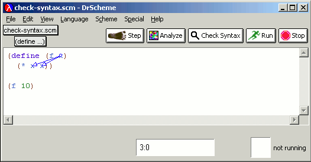

![[./images/check-syntax-1.gif]](./images/check-syntax-1.gif)
|
DrScheme offers several ways to browse programs.
Each Definitions window has a Check Syntax button. Clicking this button makes DrScheme analyze the program source and identify any syntax errors without having to run the program. It also helps find binding and bound instances of identifiers. Suppose we begin with this program.
|
|
Clicking Check Syntax causes the color of the identifiers to become slightly paler.
Mousing over a bound identifier shows its binding instance, while mousing over a binding instance shows all bound uses. Right-clicking presents a menu that includes a Tack/Untack Arrow(s) entry, which leaves arrows persistent on screen while scrolling around.
|  |
The same menu also includes a facility for consistently renaming identifiers. DrScheme uses a ``smart'' renaming mechanism so it can distinguish between different identifiers that share the same name. To see this at work, suppose we begin with this program after we have clicked on Check Syntax.
Right-clicking on the x bound by f presents a menu
that includes ``Rename x''. Selecting this and typing
w in the box results in the following program.
Note that neither of the identifiers named x bound by the
functions add-first and g were affected by this
renaming. If we select the first w in the addition and
rename it to v, this automatically and consistently renames
the second w in the sum, too.
Note that each renaming or edit potentially invalidates the information computed by Check Syntax, so we had to run Check Syntax after each renaming to perform the sequence of renamings above.
A contour is a extremely shrunken version of the program source -- think of it as ``the view from 20,000 feet''. The Special | Insert Large Letters ... menu entry inserts a comment in ``large'' letters, which helps highlight portions of the source.
At the top-left of the DrScheme window is a button whose label reads
(define ...)
|
In the PLT languages, if you've built a program using several
modules (a language construct in PLT Scheme), you can employ
the Module Browser, available from the Show menu.
Each box represents a module and the arrows depict dependencies. Mousing over a box highlights its dependencies and lists its filename and size. (The boxes are also shaded proportional to the sizes of the corresponding modules.) Double-clicking on the boxes is an excellent way to navigate the program source. The Browser is also invaluable in detecting and removing unnecessary references to modules.
If you want the Module Browser in a separate window rather than as a pane in your editor, you can choose Scheme | Module Browser....